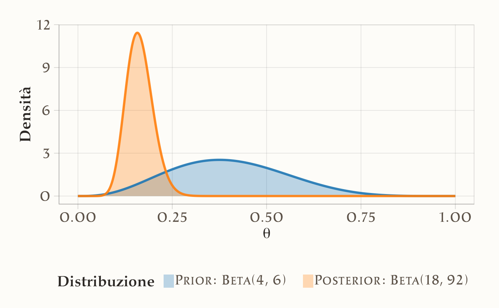
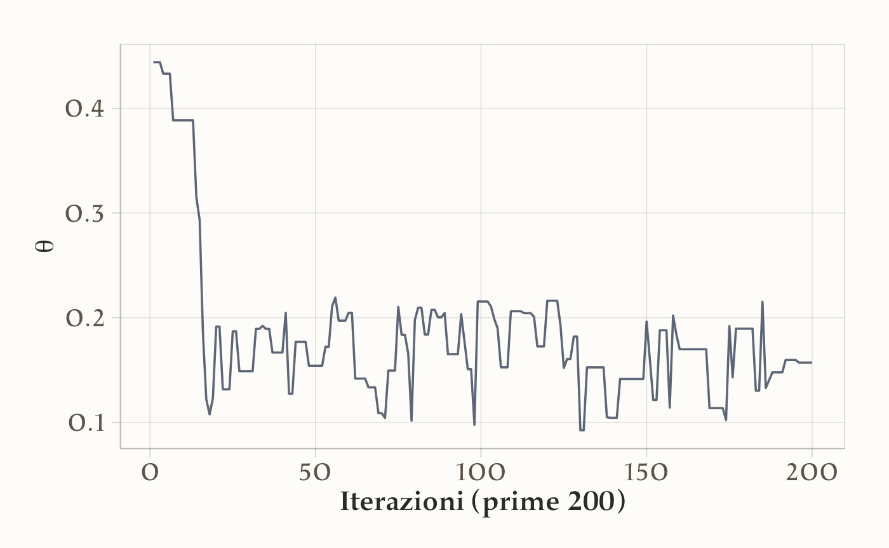
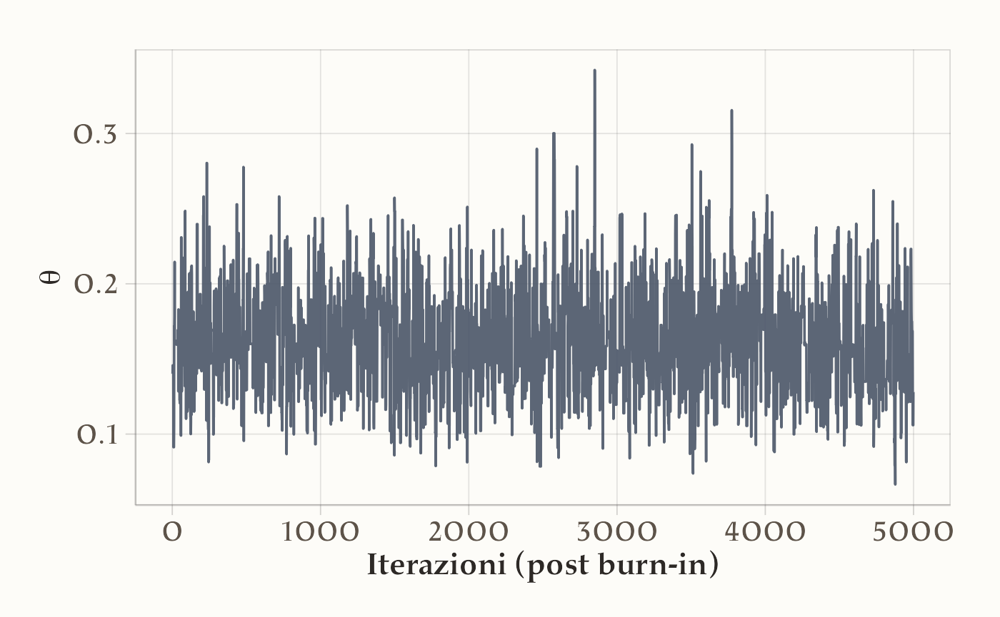
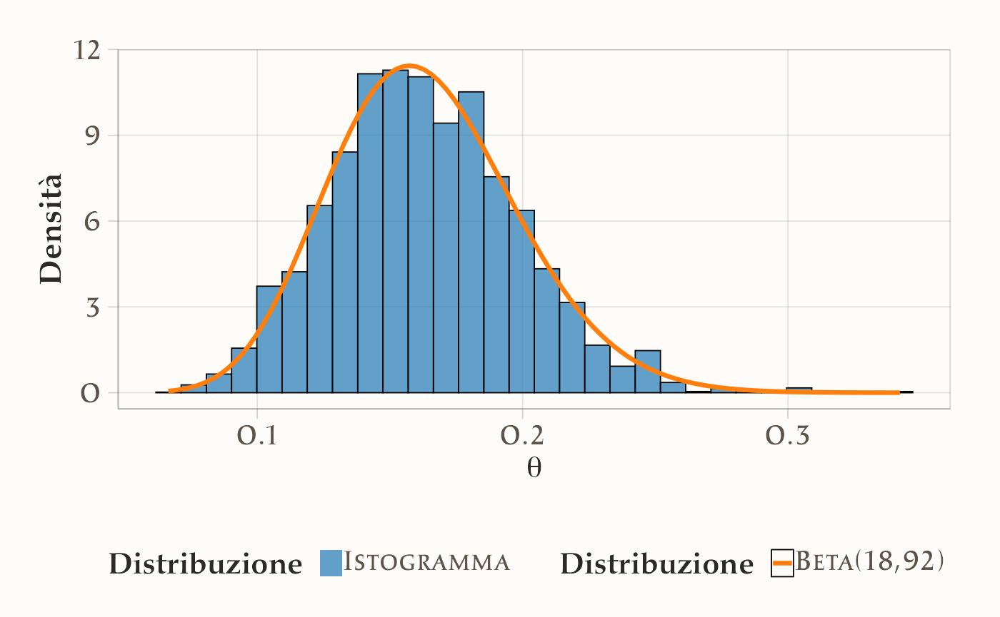

here::here("code", "_common.R") |>
source()
# Load packages
if (!requireNamespace("pacman")) install.packages("pacman")
pacman::p_load(cmdstanr, reshape2)11 L’algoritmo di Metropolis-Hastings
Introduzione
Nei capitoli precedenti abbiamo visto che l’inferenza bayesiana può essere risolta esattamente in alcuni casi fortunati, grazie alle famiglie coniugate, oppure approssimata con metodi semplici come l’uso di una griglia di valori. Questi strumenti ci hanno permesso di comprendere a fondo la logica dell’aggiornamento bayesiano, ma hanno anche mostrato chiaramente i loro limiti: i casi coniugati sono eccezioni, e l’approccio su griglia diventa rapidamente impraticabile quando il numero di parametri cresce oltre uno o due. Per affrontare problemi realistici, che in psicologia riguardano quasi sempre modelli con più parametri e strutture complesse, dobbiamo introdurre un metodo generale che ci consenta di ottenere campioni dalla distribuzione a posteriori senza doverla calcolare in forma chiusa. Questo metodo esiste, ed è noto come algoritmo di Metropolis (Hastings, 1970; Metropolis et al., 1953).
L’algoritmo di Metropolis rappresenta una svolta concettuale: offre una soluzione universale per generare campioni dalla distribuzione a posteriori, indipendentemente dalla forma della verosimiglianza e del prior. In questo senso, risolve in modo definitivo il problema di come rendere praticabile l’inferenza bayesiana. Tuttavia, presenta anche due limiti: è relativamente inefficiente dal punto di vista computazionale e richiede di scrivere codice su misura per ogni modello. Nonostante ciò, la sua logica è così generale e potente che costituisce la base di tutti gli algoritmi moderni di campionamento, incluso il metodo NUTS implementato in Stan.
In questo capitolo introdurremo passo dopo passo l’algoritmo di Metropolis, ne vedremo il funzionamento intuitivo e lo applicheremo a casi concreti. Questo ci permetterà di capire la logica alla base di gran parte dell’inferenza bayesiana moderna, che rimane immutata anche nei metodi più sofisticati.
Panoramica del capitolo
- Utilizzare metodi Monte Carlo per stimare valori attesi e probabilità, evitando calcoli integrali complessi.
- Comprendere il ruolo delle catene di Markov nel campionamento dalla distribuzione a posteriori.
- Implementare l’algoritmo di Metropolis per il campionamento a posteriori.
- Valutare la convergenza delle catene con strumenti diagnostici come trace plot e autocorrelazione.
- Gestire la fase di burn-in e utilizzare più catene per garantire stazionarietà e ridurre l’autocorrelazione.
11.1 L’obiettivo del metodo MCMC
Il metodo MCMC (Markov Chain Monte Carlo) è un approccio computazionale che consente di approssimare distribuzioni di probabilità complesse generando una sequenza di valori campionati che segue la distribuzione a posteriori di interesse. L’idea di base è la seguente: consideriamo la distribuzione a posteriori come una popolazione da cui desideriamo estrarre dei campioni. Generando un numero sufficientemente grande di campioni (ad esempio diverse migliaia), la distribuzione empirica dei campioni ottenuti si avvicina progressivamente alla distribuzione teorica a posteriori. In questo modo, è possibile stimare quantità di interesse, come la media, la varianza o gli intervalli di credibilità, anche senza conoscere la forma analitica esplicita della distribuzione a posteriori.
11.1.1 La natura dipendente del campionamento MCMC
A differenza delle tecniche di campionamento indipendente precedentemente esaminate, l’approccio MCMC genera una sequenza di valori correlati tramite un meccanismo di transizione markoviana. La caratteristica distintiva di questo processo risiede nella proprietà di Markov: ogni nuovo campione dipende esclusivamente dallo stato corrente della catena e mostra memoria soltanto a breve termine, piuttosto che dipendere dall’intera storia precedente.
Questa architettura sequenziale produce inevitabilmente autocorrelazione tra le osservazioni adiacenti. Quando la catena visita una regione ad alta densità della distribuzione target, tende a persistere in tale zona per diverse iterazioni prima di migrare verso altre regioni. Questo comportamento è funzionale all’esplorazione efficiente dello spazio parametrico, ma introduce importanti considerazioni pratiche:
- l’informazione effettiva contenuta in \(N\) campioni correlati è inferiore a quella di \(N\) campioni indipendenti;
- la valutazione della convergenza richiede analisi diagnostiche specifiche;
- la dimensione efficace del campione (ESS) diventa un parametro cruciale per la qualità dell’inferenza.
Per compensare questa riduzione dell’informazione per campione, è generalmente necessario generare sequenze più lunghe rispetto al campionamento indipendente. Tuttavia, questo svantaggio apparente è ampiamente compensato dalla capacità di MCMC di affrontare problemi complessi che risulterebbero altrimenti irrisolvibili con i metodi tradizionali.
11.1.2 Perché utilizzare MCMC
Il metodo MCMC rappresenta uno strumento fondamentale per l’inferenza bayesiana moderna, in quanto consente di affrontare problemi complessi con distribuzioni a posteriori di forma arbitraria e in spazi ad alta dimensionalità. Uno dei suoi principali vantaggi risiede nella capacità di bypassare il calcolo esplicito dell’evidenza, ovvero dell’integrale di normalizzazione richiesto dal teorema di Bayes, che spesso risulta analiticamente intrattabile. Attraverso la simulazione numerica, è possibile generare campioni la cui distribuzione empirica converge alla vera distribuzione a posteriori, permettendo così una stima accurata di qualsiasi quantità inferenziale di interesse.
Nel seguito ci concentreremo sull’algoritmo di Metropolis, uno dei metodi più semplici ed essenziali per implementare il campionamento MCMC.
11.2 L’algoritmo di Metropolis: introduzione intuitiva
L’algoritmo di Metropolis è un metodo MCMC che consente di esplorare una distribuzione di probabilità complessa costruendo una sequenza di campioni dipendenti tra loro. La logica dell’algoritmo può essere riassunta nei seguenti passaggi fondamentali:
- Punto di partenza: si inizia da un valore iniziale \(\theta_0\) scelto arbitrariamente.
- Proposta di un nuovo punto: si genera un nuovo valore candidato \(\theta^*\) partendo da \(\theta_0\), utilizzando una distribuzione di proposta (ad esempio una distribuzione normale centrata su \(\theta_0\)).
- Valutazione della proposta: si confrontano le densità a posteriori associate al valore attuale \(\theta_0\) e al valore proposto \(\theta^*\).
-
Decisione di accettazione:
- se \(\theta^*\) ha una densità a posteriori più alta di \(\theta_0\), viene accettato automaticamente;
- se \(\theta^*\) ha una densità a posteriori inferiore, viene accettato con una certa probabilità proporzionale al rapporto delle densità.
- Registrazione: in ogni caso, si registra la posizione attuale (sia che si sia accettato un nuovo punto, sia che si sia rimasti fermi).
Questo processo viene ripetuto per un numero elevato di iterazioni, generando una catena di campioni che, dopo un opportuno periodo iniziale (detto burn-in), approssima la distribuzione a posteriori.
11.3 Perché accettiamo anche mosse peggiori
Uno degli aspetti caratteristici dell’algoritmo di Metropolis è la regola di accettazione che consente, con una certa probabilità, di accettare anche proposte \(\theta^*\) con densità a posteriori inferiore rispetto allo stato corrente. Questa scelta apparentemente controintuitiva è essenziale per garantire un’adeguata esplorazione dello spazio dei parametri.
Se l’algoritmo accettasse esclusivamente mosse che migliorano la densità, convergerebbe rapidamente verso un picco locale della distribuzione, ma rischierebbe di tralasciare altre regioni significative dello spazio. Accettando occasionalmente mosse verso densità inferiori, la catena può sfuggire a massimi locali ed esplorare in modo più completo la distribuzione target, incluso l’accesso a modalità distinte che altrimenti risulterebbero inaccessibili.
Questa proprietà è fondamentale per ottenere una catena in grado di rappresentare fedelmente l’intera distribuzione a posteriori, specialmente quando essa è multimodale o presenta regioni di bassa probabilità tra aree ad alta densità. Senza questo meccanismo, l’algoritmo perderebbe la capacità di esplorare globalmente lo spazio dei parametri, compromettendo la validità delle inferenze ottenute.
11.4 La scelta della larghezza della proposta
Nell’algoritmo di Metropolis, la proposta di un nuovo valore \(\theta^*\) viene solitamente generata a partire dallo stato corrente \(\theta_t\) utilizzando una distribuzione di proposta simmetrica, ad esempio una distribuzione normale \(\mathcal{N}(\theta_t, \tau^2)\), dove \(\tau\) rappresenta la deviazione standard della proposta.
La scelta del valore di \(\tau\) (ovvero della larghezza della proposta) è cruciale per il buon funzionamento dell’algoritmo:
- se \(\tau\) è troppo piccolo, i passi proposti saranno molto vicini al punto attuale. In questo caso, molte proposte saranno accettate, ma la catena si muoverà lentamente nello spazio dei parametri, esplorandolo inefficientemente (alta correlazione tra i campioni);
- se \(\tau\) è troppo grande, i passi proposti saranno molto lontani dal punto attuale. In questo caso, la maggior parte delle proposte cadrà in regioni di bassa densità, portando a un alto tasso di rifiuto delle proposte e quindi a una scarsa efficienza del campionamento.
Un valore ottimale di \(\tau\) deve bilanciare l’accettazione sufficiente di nuove proposte e l’esplorazione efficiente dello spazio dei parametri. In generale, si cerca di ottenere un tasso di accettazione compreso tra il 40% e il 50% per l’algoritmo di Metropolis a singolo parametro.
11.5 L’importanza dei grafici diagnostici: Trace plot e Correlogramma
Per valutare la qualità della catena generata dall’algoritmo di Metropolis, è fondamentale analizzare alcuni grafici diagnostici.
11.5.1 Trace plot
Il trace plot, che rappresenta la sequenza dei valori campionati di \(\theta\) in funzione delle iterazioni, costituisce uno strumento diagnostico essenziale per valutare il comportamento della catena MCMC. Una catena che si comporta bene mostra fluttuazioni stazionarie attorno a un valore medio costante, senza trend o derive prolungate nel tempo, indicando così una corretta esplorazione della regione di alta densità della distribuzione a posteriori.
Al contrario, trace plot problematici possono rivelare diverse criticità. Una fase iniziale con andamento sistematicamente crescente o decrescente suggerisce un periodo di burn-in insufficiente, richiedendo l’eliminazione di un maggior numero di campioni iniziali. Una catena che presenta bassa variabilità o che si stabilizza prematuramente in una regione ristretta dello spazio dei parametri può indicare una esplorazione incompleta, possibilmente a causa di una parametrizzazione inefficace o di una distribuzione proposta troppo stretta. In casi più gravi, la catena può apparire stazionaria pur essendo bloccata in un massimo locale, senza aver raggiunto la vera distribuzione target, situazione particolarmente insidiosa in presenza di multimodalità.
11.5.2 Correlogramma
Il correlogramma rappresenta l’autocorrelazione tra i campioni della catena a diversi ritardi (lag). In una catena efficiente, l’autocorrelazione decresce rapidamente al crescere del lag, avvicinandosi a zero dopo pochi passi. Questo comportamento indica un adeguato mescolamento della catena, in cui ciascun campione apporta nuova informazione indipendente.
Al contrario, un’autocorrelazione persistentemente elevata — che si mantiene alta anche a lag elevati — segnala una forte dipendenza tra campioni consecutivi. In tali casi, la catena si muove lentamente attraverso lo spazio dei parametri, riducendo l’efficienza del campionamento e richiedendo un numero maggiore di iterazioni per ottenere stime affidabili. Un correlogramma di questo tipo suggerisce spesso la necessità di riparametrizzare il modello o di adottare un algoritmo di campionamento più efficiente.
11.5.3 Struttura del capitolo
Questi concetti costituiscono il fondamento necessario per affrontare la comprensione operativa e pratica dell’algoritmo di Metropolis che svilupperemo nei prossimi esempi. A questo fine, il capitolo è strutturato in varie sezioni che facilitano la comprensione progressiva del tema.
- Inizieremo discutendo di come la distribuzione a posteriori possa essere approssimata mediante tecniche di simulazione convenzionali. Questa prima parte presuppone che la distribuzione target, o “a posteriori,” sia già conosciuta o disponibile per l’analisi.
- In seguito, passeremo a illustrare come l’algoritmo di Metropolis possa essere utilizzato per affrontare situazioni in cui la distribuzione a posteriori non è direttamente nota. In questi casi, spesso abbiamo a disposizione informazioni riguardanti la distribuzione a priori e la funzione di verosimiglianza, che possono essere utilizzate per ottenere un’approssimazione efficace della distribuzione a posteriori.
11.6 Un esempio concreto
A titolo esemplificativo, utilizzeremo il dataset moma_sample.csv, il quale costituisce un campione casuale di 100 artisti provenienti dal Museo di Arte Moderna di New York (MoMA) e contiene diverse informazioni relative a ciascun artista. Il nostro interesse è focalizzato sulla determinazione della probabilità che un artista presente nel MoMA appartenga alla generazione X o a una generazione successiva (nati dopo il 1965). Questa probabilità sarà indicata come \(\pi\) (si veda Johnson et al., 2022).
Importiamo i dati.
Esaminiamo le prime cinque righe del data frame.
moma_sample |>
head()
#> artist country birth death alive genx gender count
#> 1 Ad Gerritsen dutch 1940 2015 FALSE FALSE male 1
#> 2 Kirstine Roepstorff danish 1972 NA TRUE TRUE female 3
#> 3 Lisa Baumgardner american 1958 2015 FALSE FALSE female 2
#> 4 David Bates american 1952 NA TRUE FALSE male 1
#> 5 Simon Levy american 1946 NA TRUE FALSE male 1
#> 6 Pierre Mercure canadian 1927 1966 FALSE FALSE male 8
#> year_acquired_min year_acquired_max
#> 1 1981 1981
#> 2 2005 2005
#> 3 2016 2016
#> 4 2001 2001
#> 5 2012 2012
#> 6 2008 2008Dai dati osserviamo che solo 14 artisti su 100 appartengono alla generazione X o a una generazione successiva.
# Calcoliamo la distribuzione delle generazioni
result <- table(moma_sample$genx)
result
#>
#> FALSE TRUE
#> 86 14Il valore osservato \(y = 14\) fornisce informazioni sul campione selezionato, ma la vera proporzione \(\theta\) di opere riconducibili alla Generazione X o successive nell’intera collezione del MOMA rimane ignota. Per modellare l’incertezza su questo parametro, i dati possono essere formalizzati come realizzazione di una variabile casuale binomiale:
\[ y \sim \text{Binomial}(N = 100, \theta). \]
Per incorporare la conoscenza a priori sulla probabilità \(\theta\), assumiamo una distribuzione Beta(4, 6) come priore. Questa scelta riflette una credenza pregressa secondo cui \(\theta\) tende a essere inferiore a 0.5, pur consentendo una certa flessibilità nell’inferenza.
Sfruttando le proprietà delle distribuzioni coniugate, possiamo calcolare esattamente la distribuzione a posteriori. Il modello specificato può essere rappresentato nel modo seguente:
\[ \begin{align} Y &\sim \text{Binomiale}(100, \theta),\notag\\ \theta &\sim \text{Beta}(4, 6). \notag \end{align} \] Dopo aver osservato il dato \(Y = 14\), la distribuzione a posteriori per \(\theta\) si ottiene per coniugazione: \[ \theta \mid (Y = 14) \sim \text{Beta}(4 + 14, 6 + 100 - 14) = \text{Beta}(18, 92) \]
Nella figura seguente, è rappresentata la distribuzione a posteriori del parametro \(\theta\) (\(\text{Beta}(18, 92)\); colore arancione), insieme alla distribuzione alla prior specificata (\(\text{Beta}(4, 6)\); colore blu).

Se vogliamo conoscere il valore della media a posteriori di \(\theta\), per esempio, il risultato esatto è
\[ \bar{\theta}_{post} = \frac{\alpha}{\alpha + \beta} = \frac{18}{18 + 92} \approx 0.1636. \]
11.6.1 Simulazione con distribuzione target nota
Usiamo ora una simulazione numerica per stimare la media a posteriori di \(\theta\). Conoscendo la forma della distribuzione a posteriori \(Beta(18, 92)\), possiamo generare un campione di osservazioni casuali da questa distribuzione. Successivamente, calcoliamo la media delle osservazioni ottenute per ottenere un’approssimazione della media a posteriori.
Se vogliamo ottenere un risultato approssimato con un numero limitato di campioni (ad esempio, 10), possiamo utilizzare la seguente simulazione:
# Calcoliamo la media dei campioni
mean(y)
#> [1] 0.151Tuttavia, con soli 10 campioni, l’approssimazione potrebbe non essere molto accurata. Aumentando il numero di campioni, ad esempio a 10,000, possiamo ottenere una stima molto più precisa:
Quando il numero di campioni dalla distribuzione a posteriori diventa molto grande, la media campionaria converge al valore atteso della distribuzione della popolazione. Questo principio non si applica solo alla media, ma anche ad altre statistiche descrittive come la moda e la varianza.
È importante sottolineare che l’approccio di simulazione Monte Carlo diretto è applicabile solo quando la forma analitica della distribuzione a posteriori è nota e campionabile mediante apposite funzioni. Questo è stato possibile nel caso presentato, grazie alla coniugazione tra verosimiglianza binomiale e priori beta, che ha condotto a una distribuzione a posteriori beta di parametri noti. Tuttavia, in contesti reali più complessi, le distribuzioni a priori coniugate sono l’eccezione piuttosto che la regola, e la forma della posterior risulta spesso intrattabile analiticamente, impedendo l’uso di metodi di campionamento diretto.
In tali scenari, gli algoritmi MCMC, come l’algoritmo di Metropolis, offrono una soluzione flessibile ed efficace. Tali metodi permettono di generare campioni approssimati dalla distribuzione a posteriori senza richiederne una forma chiusa, basandosi esclusivamente sulla valutazione della verosimiglianza e della distribuzione a priori fino a una costante di normalizzazione. Grazie a questa proprietà, le tecniche MCMC costituiscono lo strumento computazionale predominante per l’inferenza bayesiana in modelli avanzati e realistici, dove l’analisi esatta non è praticabile.
11.6.2 L’algoritmo di Metropolis
Dopo aver visto che la simulazione diretta è possibile solo in casi eccezionali, possiamo ora introdurre il primo vero strumento generale per affrontare distribuzioni posteriori di forma arbitraria: l’algoritmo di Metropolis. Questo metodo appartiene alla famiglia MCMC e sfrutta la costruzione di una catena di Markov per produrre campioni che, a regime, si distribuiscono secondo la distribuzione a posteriori desiderata.
11.6.2.1 Logica di base
Il procedimento è sorprendentemente semplice. La catena parte da un valore iniziale del parametro. A ogni passo, un nuovo candidato viene generato tramite una distribuzione di proposta (spesso una normale centrata sullo stato corrente). Il punto proposto viene poi confrontato con quello attuale: se la sua densità a posteriori è maggiore, viene accettato; se è minore, viene accettato con una probabilità proporzionale al rapporto delle due densità. In questo modo la catena si muove nello spazio dei parametri favorendo le regioni più plausibili, ma senza rimanere intrappolata in massimi locali, poiché di tanto in tanto vengono accettati anche spostamenti verso aree meno probabili.
11.6.2.2 Convergenza e burn-in
Nei primi passi la catena riflette ancora la condizione iniziale e non rappresenta adeguatamente la distribuzione target. È per questo che una quota iniziale di iterazioni, detta burn-in, viene eliminata dall’analisi. Dopo questa fase transitoria, la catena tende alla distribuzione stazionaria: i campioni successivi possono allora essere utilizzati per stimare medie, varianze o probabilità a posteriori. La quantità di burn-in necessaria non è fissata a priori, ma deve essere valutata tramite strumenti diagnostici.
11.6.2.3 Accettazione e rifiuto: un equilibrio sottile
Il cuore dell’algoritmo sta nella regola di accettazione. Essa realizza un equilibrio tra due esigenze opposte: da un lato lo sfruttamento delle regioni già identificate come ad alta densità, dall’altro l’esplorazione di nuove aree che potrebbero rivelarsi rilevanti. Accettare solo proposte migliori renderebbe la catena miopicamente attratta da un singolo massimo, mentre accettare anche proposte peggiori — seppur con probabilità ridotta — consente una copertura globale dello spazio parametrico. È questo meccanismo che garantisce la capacità dell’algoritmo di approssimare fedelmente la distribuzione a posteriori.
11.6.3 Passaggi fondamentali dell’algoritmo di Metropolis
Il funzionamento dell’algoritmo può essere riassunto in una sequenza ricorsiva di operazioni, che trasforma un singolo punto di partenza in una catena di campioni distribuiti secondo la posteriori:
Inizializzazione. Si sceglie un valore iniziale \(\theta_1\) per il parametro e si fissa l’indice di iterazione \(t = 1\). Questo punto rappresenta il primo elemento della catena.
Generazione di una proposta. A partire dallo stato corrente \(\theta_t\), si estrae un nuovo candidato \(\theta_p\) da una distribuzione di proposta \(g(\theta_p \mid \theta_t)\). Una scelta comune è la distribuzione normale centrata su \(\theta_t\) con deviazione standard \(\tau\), che controlla l’ampiezza dei passi.
Controllo di validità. Se il campione proposto non appartiene al dominio consentito (ad esempio, se \(\theta\) rappresenta una probabilità, il valore deve rimanere compreso tra 0 e 1), la proposta viene immediatamente rifiutata e si prosegue con il campione corrente.
-
Calcolo del rapporto di accettazione. Si valuta il rapporto
\[ \alpha = \frac{p(\theta_p \mid y)}{p(\theta_t \mid y)}, \]
che confronta la plausibilità a posteriori del punto proposto \(\theta_p\) con quella dello stato corrente \(\theta_t\).
-
Decisione di accettazione.
- Se \(\alpha \geq 1\), la proposta viene accettata senza condizioni: lo stato successivo della catena sarà \(\theta_{t+1} = \theta_p\).
- Se \(\alpha < 1\), la proposta viene accettata con probabilità \(\alpha\). In caso contrario, lo stato non cambia e \(\theta_{t+1} = \theta_t\).
Iterazione. I passaggi precedenti vengono ripetuti molte volte. La sequenza risultante \({\theta_1, \theta_2, \ldots}\) costituisce la catena di Markov che, dopo una fase di burn-in, riproduce fedelmente la distribuzione a posteriori.
11.6.4 Alcuni aspetti cruciali
Distribuzione di proposta. La scelta di \(g(\theta_p \mid \theta_t)\) determina il ritmo dell’esplorazione. Un valore di \(\tau\) troppo piccolo rende i movimenti minimi: la catena accetta quasi tutte le proposte, ma procede lentamente e i campioni sono fortemente autocorrelati. Viceversa, un \(\tau\) troppo grande genera proposte spesso improbabili, con conseguente alto tasso di rifiuto. L’efficienza dell’algoritmo dipende da un compromesso fra questi due estremi.
Ruolo del rapporto di accettazione. Il meccanismo dell’accettazione probabilistica assicura che la catena non si limiti a inseguire i massimi locali della distribuzione, ma sia in grado di attraversare anche regioni meno dense, favorendo una copertura più completa dello spazio dei parametri.
Esplorazione globale. Proprio grazie a questa possibilità di accettare campioni peggiori, l’algoritmo di Metropolis è in grado di rappresentare accuratamente distribuzioni multimodali e complesse, garantendo robustezza in contesti in cui metodi deterministici fallirebbero.
11.7 Esempio di implementazione
Riprendiamo il caso del MoMA: vogliamo stimare la probabilità \(\theta\) che un artista appartenga alla Generazione X o successiva, osservando 14 artisti su 100. Usiamo un modello binomiale con prior \(\text{Beta}(4,6)\), e implementiamo l’algoritmo di Metropolis in R.
11.7.1 Componenti del modello
Distribuzione a priori Rappresenta la nostra conoscenza iniziale:
prior <- function(p) {
dbeta(p, shape1 = 4, shape2 = 6)
}Verosimiglianza La probabilità di osservare 14 successi su 100 prove:
likelihood <- function(p) {
dbinom(14, size = 100, prob = p)
}Posterior (non normalizzata) Combinazione di priori e verosimiglianza:
posterior <- function(p) {
prior(p) * likelihood(p)
}Distribuzione di proposta Genera un candidato vicino al punto attuale:
proposal_distribution <- function(current_state, proposal_sigma) {
rnorm(1, mean = current_state, sd = proposal_sigma)
}11.7.2 Algoritmo di Metropolis
L’implementazione segue esattamente i passaggi teorici discussi sopra:
metropolis <- function(n_samples, start, proposal_sigma) {
samples <- numeric(n_samples) # per salvare la catena
current <- start # stato iniziale
for (i in seq_len(n_samples)) {
# 1. Genera una proposta
proposal <- proposal_distribution(current, proposal_sigma)
# 2. Controlla se la proposta è valida (qui θ deve stare in [0,1])
if (proposal >= 0 && proposal <= 1) {
# 3. Calcola il rapporto di accettazione
alpha <- posterior(proposal) / posterior(current)
# 4. Decidi se accettare
if (runif(1) < alpha) {
current <- proposal # accettata
}
}
# 5. Salva lo stato (attuale o precedente)
samples[i] <- current
}
return(samples)
}11.7.3 Interpretazione intuitiva
Si può immaginare l’algoritmo come una passeggiata su un paesaggio collinare:
- L’altezza delle colline corrisponde alla densità a posteriori.
- Ogni passo è una proposta casuale in una direzione vicina.
- Se il punto è più alto, lo accettiamo sempre (meglio!).
- Se è più basso, lo accettiamo con una probabilità proporzionale a quanto è più basso: qualche volta sì, qualche volta no.
Ripetendo questa passeggiata migliaia di volte, i luoghi visitati con più frequenza corrispondono alle zone dove la posteriori è più densa. Ottimo blocco! Ti propongo una versione più pulita e didattica, con micro-migliorie che aiutano a leggere e a verificare (senza aggiungere complessità): aggiungo il calcolo del tasso di accettazione, etichette chiare nei grafici, una gestione del burn-in esplicita e un confronto numerico con i valori esatti.
11.8 Esecuzione dell’algoritmo
# Parametri dell'algoritmo
n_samples <- 10000
start <- 0.50
proposal_sigma <- 0.10
# Esecuzione del campionamento
set.seed(123) # riproducibilità
samples <- metropolis(n_samples, start, proposal_sigma)
# Tasso di accettazione (quante volte la catena si muove)
accept_rate <- mean(diff(samples) != 0)
accept_rate
#> [1] 0.392Il tasso di accettazione è un indicatore utile del “ritmo” della catena. In 1D valori ~0.4–0.5 sono spesso un buon compromesso.
11.9 Analisi dei risultati
11.9.1 Burn-in
Scartiamo i primi 50% dei campioni (criterio semplice e chiaro per questo esempio):
burnin <- floor(n_samples * 0.50)
post_burnin_samples <- samples[(burnin + 1):n_samples]11.9.2 Riassunti numerici
Media e deviazione standard a posteriori (stima via MCMC):
Confronto con i valori esatti della Beta(18, 92):
11.9.3 Trace plot (inizio catena e tratto post burn-in)
Prime 200 iterazioni: si vede l’avvio e l’assestamento:
tibble(
Iterazione = 1:200,
Theta = samples[1:200]
) |>
ggplot(aes(x = Iterazione, y = Theta)) +
geom_line(linewidth = 0.6) +
labs(x = "Iterazioni (prime 200)", y = expression(theta)) +
theme(axis.title = element_text(face = "bold"))
Andamento dopo il burn-in: la catena oscilla intorno alla regione stazionaria:
tibble(
Iterazione = seq_along(post_burnin_samples),
Theta = post_burnin_samples
) |>
ggplot(aes(x = Iterazione, y = Theta)) +
geom_line(linewidth = 0.6) +
labs(x = "Iterazioni (post burn-in)", y = expression(theta)) +
theme(axis.title = element_text(face = "bold"))
11.9.4 Confronto visivo con la posteriore esatta
Sovrapponiamo l’istogramma dei campioni post burn-in alla densità Beta(18, 92).
# Palette per la legenda
colori_custom <- c(
"Istogramma" = "#1F77B4", # Blu
"Beta(18,92)" = "#FF7F0E" # Arancione
)
tibble(Theta = post_burnin_samples) |>
ggplot(aes(x = Theta)) +
geom_histogram(
aes(y = after_stat(density), fill = "Istogramma"),
bins = 30, color = "black", alpha = 0.7, show.legend = TRUE
) +
stat_function(
aes(color = "Beta(18,92)"),
fun = dbeta, args = list(shape1 = 18, shape2 = 92),
linewidth = 1.1, show.legend = TRUE
) +
labs(x = expression(theta), y = "Densità") +
scale_fill_manual(
name = "Distribuzione",
values = colori_custom,
breaks = names(colori_custom)
) +
scale_color_manual(
name = "Distribuzione",
values = colori_custom,
breaks = names(colori_custom)
) +
guides(
fill = guide_legend(override.aes = list(color = NA)),
color = guide_legend(override.aes = list(fill = NA))
) +
theme(
legend.position = "bottom",
legend.title = element_text(face = "bold"),
axis.title = element_text(face = "bold")
)
11.9.5 Intervallo di credibilità
Stimiamo un 94% ETI dai campioni MCMC e confrontiamolo con l’analitico:
11.9.6 Cosa osservare (guida alla lettura)
- Il trace plot post burn-in oscilla senza trend: buon segnale di stazionarietà.
- L’istogramma dei campioni si sovrappone bene alla Beta(18, 92): l’algoritmo sta ricostruendo la posteriore.
- Media, deviazione standard e quantili dai campioni sono molto vicini ai valori esatti: conferma pratica della correttezza dell’implementazione.
11.10 Catene di Markov, convergenza e diagnostiche (anticipazione)
Durante una simulazione Monte Carlo basata su Metropolis — o, più in generale, su un algoritmo MCMC — otteniamo una catena, ossia una sequenza ordinata di valori del parametro \(\theta\). Ogni elemento della catena rappresenta uno stato che l’algoritmo ha visitato nello spazio dei parametri. Possiamo immaginare questa sequenza come il percorso di un esploratore che si muove tra diverse regioni del paesaggio della distribuzione a posteriori.
All’inizio, la catena riflette soprattutto il punto di partenza: i primi passi sono quindi influenzati dalle condizioni iniziali. Con il procedere delle iterazioni, però, l’effetto del punto di partenza si attenua e la catena converge verso una distribuzione stazionaria. È in questa fase che i campioni possono essere considerati rappresentativi della posteriore.
Per verificare che ciò avvenga, è prassi comune eseguire più catene indipendenti, ciascuna con un punto di partenza diverso. Questa strategia offre due vantaggi:
- consente di confrontare i trace plot e verificare se le catene si stabilizzano attorno alla stessa distribuzione,
- riduce il rischio che una catena resti bloccata in un massimo locale, aumentando la robustezza complessiva dell’inferenza.
La valutazione della convergenza e della qualità del campionamento può basarsi su strumenti grafici (trace plot, correlogrammi) o su indicatori quantitativi come la statistica \(\hat{R}\) di Gelman-Rubin e la dimensione del campione effettiva (ESS).
Poiché queste diagnostiche richiedono un’attenzione dedicata, qui ci limitiamo a introdurle brevemente. Il Capitolo 14 offrirà una trattazione completa, con esempi dettagliati e applicazioni pratiche.
Riflessioni conclusive
L’introduzione dell’algoritmo di Metropolis ha rappresentato una svolta decisiva per l’inferenza bayesiana. Prima della sua comparsa, l’analisi era confinata a pochi casi speciali, gestibili grazie alle distribuzioni coniugate o a modelli estremamente semplici. Con Metropolis diventa invece possibile, almeno in linea di principio, ottenere campioni dalla distribuzione a posteriori in qualunque situazione, senza conoscerne la forma analitica.
Questa è la vera potenza dell’algoritmo: dimostrare che il problema concettuale dell’inferenza bayesiana è risolto. Una volta stabilito il modello, non è più necessario calcolare integrali complicati: possiamo affidare l’esplorazione dello spazio dei parametri a una catena di Markov. Restano, naturalmente, limiti pratici: la velocità del campionamento, l’efficienza nel mescolamento e la necessità di implementazioni accurate. Non a caso, gli sviluppi successivi — dal Metropolis-Hastings fino al moderno algoritmo NUTS usato in Stan — possono essere visti come perfezionamenti tecnici di questa intuizione originaria, volti a rendere l’approccio più stabile e automatizzato (Duane et al., 1987; Geman & Geman, 1984; Hanada & Matsuura, 2022; Hoffman et al., 2014).
Dal punto di vista didattico, Metropolis rimane un passaggio fondamentale: non è soltanto un pezzo di storia, ma il nucleo concettuale da cui discendono i metodi odierni. Comprendere la sua logica — fatta di proposte, accettazioni e rifiuti — significa acquisire le chiavi per interpretare anche gli algoritmi più sofisticati, che ne condividono la stessa architettura di base.
In definitiva, l’algoritmo di Metropolis ci consegna due insegnamenti centrali. Primo: l’inferenza bayesiana non è limitata a pochi casi fortunati, ma può essere sempre condotta. Secondo: ogni modello psicologico, anche complesso e realistico, può essere trattato con questa logica, purché si disponga degli strumenti computazionali adeguati.
Bibliografia
Duane, S., Kennedy, A. D., Pendleton, B. J., & Roweth, D. (1987). Hybrid monte carlo. Physics letters B, 195(2), 216–222.
Geman, S., & Geman, D. (1984). Stochastic relaxation, Gibbs distributions, and the Bayesian restoration of images. IEEE Transactions on pattern analysis and machine intelligence, 6, 721–741.
Hanada, M., & Matsuura, S. (2022). MCMC from Scratch. Springer.
Hastings, W. K. (1970). Monte Carlo sampling methods using Markov chains and their applications. Biometrika, 57(1), 97–109.
Hoffman, M. D., Gelman, A., et al. (2014). The No-U-Turn sampler: adaptively setting path lengths in Hamiltonian Monte Carlo. Journal of Machine Learning Research, 15(1), 1593–1623.
Johnson, A. A., Ott, M., & Dogucu, M. (2022). Bayes Rules! An Introduction to Bayesian Modeling with R. CRC Press.
Metropolis, N., Rosenbluth, A. W., Rosenbluth, M. N., Teller, A. H., & Teller, E. (1953). Equation of state calculations by fast computing machines. The Journal of Chemical Physics, 21(6), 1087–1092.